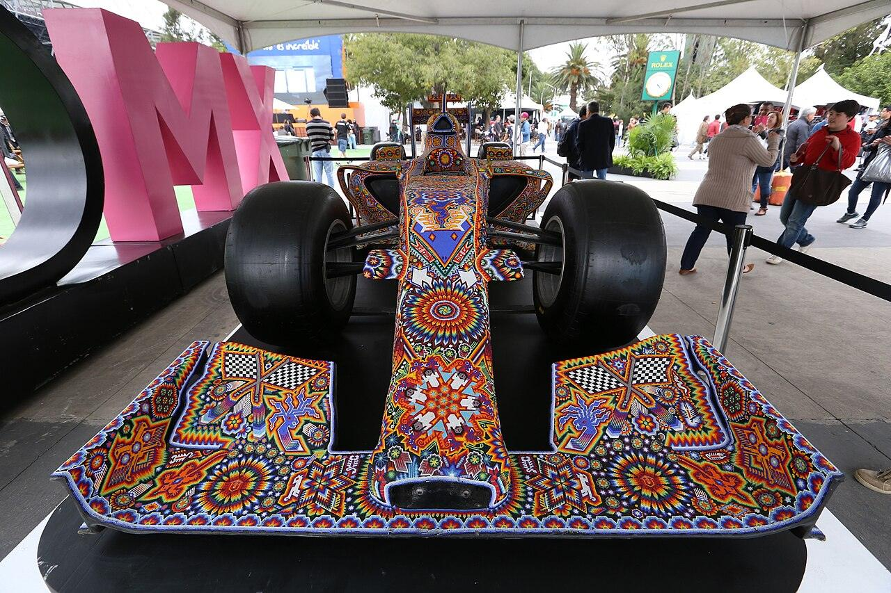

Faltan para la Q1
--horas
--minutos
--segundos
Por empezarCon FP1 + FP2
- Aciertos en el Top 10
- —/10
- En la temporada 2026
- —/10
- Orden completo
- —
- Pole acertada
- —%
Promedio con validación walk-forward
GP de este año
Correlación de Spearman con la qualy real
Veces que el P1 del modelo hizo la pole
Pronóstico · Top 10
La parrilla
Así saldrían los diez primeros si la qualy se corriera con lo que sabemos hoy. La pole va adelante a la izquierda y el resto se escalona, como en la recta de salida.
Probabilidades de 20 000 simulaciones de la qualy hechas por el modelo.Ver los 22 pilotos
El circuito
La pista
espera.
Los favoritos
Tres casas
para la pole


La tabla completa
Los 22
Posición pronosticada, prácticas y probabilidades de cada piloto. La franja muestra el rango probable de su qualy (del 10 % al 90 % de las simulaciones) y las marcas son los cortes de Q1 y Q2.
| Pos | Piloto | FP1 | FP2 | FP3 | Rango | Pasa a Q3 | Top 3 | Pole |
|---|
Rango probable (P10–P90)Posición pronosticadaCortes en P10 y P16
En la burbuja
En la
orilla
Los cortes deciden la tarde: seis pilotos caen en Q1, seis en Q2 y sólo diez pelean la pole. Estos son los que el modelo ve más cerca de la orilla.
Frontera de Q3
Probabilidad de entrar a la Q3. La luz crece con la probabilidad.
Frontera de Q1
Rango probable de cada piloto. A la derecha de la línea se queda fuera en Q1.

En vivo
Pronóstico
vs. qualy en vivo
Cada vuelta contra el pronóstico. Las flechas dicen cuántos lugares está cada piloto arriba o abajo de lo esperado, y el marcador cuenta los aciertos del Top 10.
–/10
Q1Q2Q3
- PolePendiente
- Caídos en Q1 previstos–
- Caídos en Q2 previstos–
Después de la qualy
La qualy,
revisada
El pronóstico contra el resultado oficial: cuántos del Top 10 acertó el modelo, si dio con la pole, quién cayó en Q1 y Q2 como se esperaba y por cuántos lugares falló cada piloto.
En espera del resultado oficial
Se publica al terminar la qualy
Al terminar la Q3 aquí aparece el marcador del modelo. Si no aparece solo, recarga la página.
- Aciertos del Top 10
- Pole
- Caídos en Q1 y Q2
- Posiciones exactas
- Error medio
Domingo · carrera
Cómo
termina
Pronóstico de carrera. El orden en la bandera a cuadros, después del desgaste de neumáticos, el ritmo de carrera y las paradas en pits. No es la parrilla de salida.
Orden final
En espera de la parrilla real
Se publica al terminar la qualy
Con la parrilla oficial, el simulador corre la carrera miles de veces: ritmo de tanda larga, desgaste de neumáticos, paradas y abandonos. Aquí verás el podio y cómo termina el Top 10.
- Podio
- Orden final del Top 10
- Salida → meta
- Estrategia
- Probabilidades
Domingo · pits y pista
La carrera,
vuelta a vuelta
Cuándo entra cada auto a pits y con qué neumáticos, cómo se mueve el orden en cada vuelta, quién intenta el undercut o el overcut, cuántos rebases hay en pista y cuándo suele salir el safety car.
En espera de la simulación vuelta a vuelta
Se publica antes del arranque
El simulador corre la carrera vuelta por vuelta: en qué vuelta para cada piloto, con qué compuesto sale, quién gana o pierde lugares en pista y cuándo puede neutralizarse la carrera. Si no aparece solo, recarga la página.
- Estrategias de pits
- Posiciones por vuelta
- Undercut y overcut
- Rebases
- Safety car
Después de la bandera a cuadros
La carrera,
revisada
El pronóstico de carrera contra el resultado oficial: cuántos del Top 10 acertó, si dio con el ganador y el podio, cuántos terminaron en su lugar exacto y qué tan bien leyó la estrategia.
En espera del resultado de la carrera
Se publica al terminar la carrera
Con la clasificación oficial aquí aparece cómo le fue al pronóstico: Top 10, ganador, podio, abandonos y la lectura de las paradas.
- Aciertos del Top 10
- Ganador
- Podio
- Posiciones exactas
- Estrategia

Tras la FP3
Qué
cambió
Sesión tras sesión
Cómo cambió
el pronóstico
Después de cada práctica y de la qualy el modelo se vuelve a correr con lo nuevo que se vio en pista. Aquí, el Top 10 de la qualy y de la carrera en cada momento del fin de semana: quién sube, quién baja y quién entra.

Historia
Las poles
del circuito
Cómo funciona
El modelo,
sin humo
Un pronóstico estadístico, no una corazonada. Se entrena con lo que pasó antes de cada fin de semana y se mide contra qualys reales que no vio.
Datos
Tiempos de prácticas de OpenF1 (2023 en adelante) y resultados históricos de Jolpica (2018 en adelante): promedios de qualy recientes, tasa de Q3, ritmo del equipo y la historia de cada piloto en el circuito.
Modelo
Se probaron diez modelos y ganó un Random Forest. Luego simula la qualy 20 000 veces, sumando al pronóstico los errores que tuvo en la validación; de ahí salen las probabilidades de Q3, Top 3 y pole.
Validación
Walk-forward: cada GP se pronostica sólo con los GP anteriores, como si fuera ese sábado. Cada pronóstico usa sólo los datos disponibles antes de su sesión.
Lo que más pesa
- Promedio de qualy, últimos 10 GP22%
- Veces en Q3, últimos 10 GP11%
- Promedio de qualy, últimos 5 GP11%
- Promedio de qualy en 202610%
- Promedio del equipo, últimos 5 GP6%
- Promedio de qualy, últimos 3 GP5%
- Orden en la práctica principal3%
Importancia de cada variable en el Random Forest del GP de México (suma de 62 variables = 100 %).
Contra la intuición
ModeloAciertos promedio en el Top 108.21
Ordenar por la FP2Lo que haría cualquiera viendo las prácticas7.64
Mejor vuelta de FP1 y FP2La vuelta más rápida de cada piloto7.62
Baselines medidos en la validación walk-forward de 66 GP. Elegir el modelo mirando la misma validación lo favorece un poco: tómalo como una cota optimista.
Aprende de cada Gran Premio
Evolución
del modelo
Después de cada carrera el pronóstico se mide contra lo que pasó y se ponen a prueba variantes nuevas contra el modelo vigente, en todos los GP anteriores. Un cambio sólo se adopta si mejora con claridad (más que su margen de error) y no empeora en las carreras recientes.